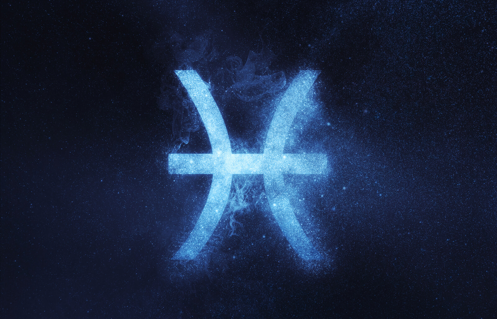
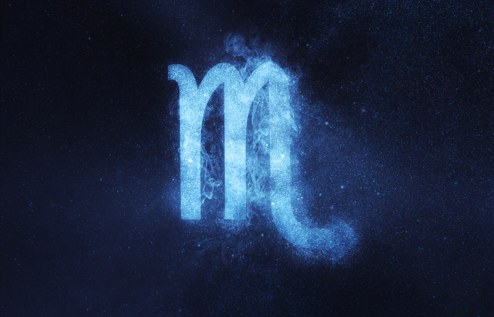
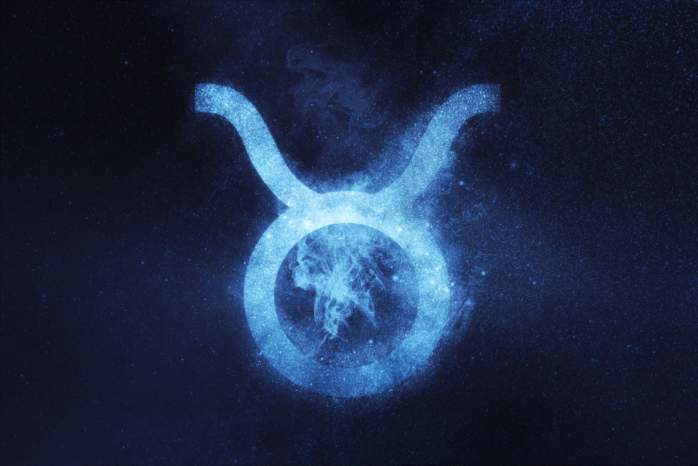
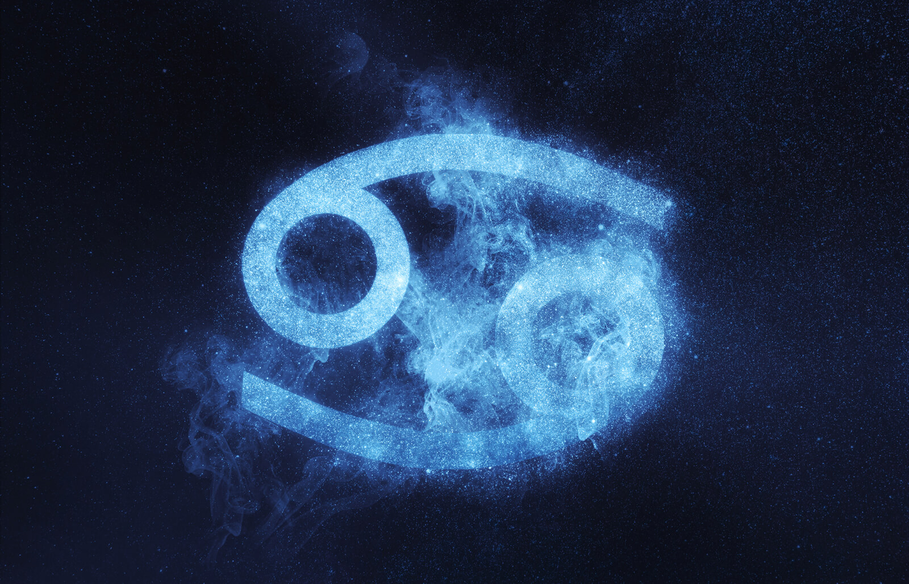

Pisces (February 19 - March 20)
Pisces, a water sign, is the last constellation of the zodiac.
It's symbolized by two fish swimming in opposite directions,
representing the constant division of Pisces's attention between fantasy and reality.

Scorpio (October 23 - November 21)
Scorpio is one of the most misunderstood signs of the zodiac.
Because of its incredible passion and power, Scorpio is often mistaken for a fire sign.
In fact, Scorpio is a water sign that derives its strength from the psychic, emotional realm.

Taurus (April 20 - May 20)
Taurus is an earth sign represented by the bull.
Like their celestial spirit animal, Taureans enjoy relaxing in serene, bucolic environments,
surrounded by soft sounds, soothing aromas, and succulent flavors.
Taurus is ruled by Venus, the enchanting planet that governs love, beauty, and money.
Virgo (August 23 - September 22)
Virgo is an earth sign historically represented by the goddess of wheat and agriculture,
an association that speaks to Virgo’s deep-rooted presence in the material world.
Virgos are logical, practical, and systematic in their approach to life.

Cancer (June 21 - July 22)
Cancer is a cardinal water sign. Represented by the crab,
this oceanic crustacean seamlessly weaves between the sea and shore,
representing Cancer’s ability to exist in both emotional and material realms.
Gemini (May 21 - June 20)
Have you ever been so busy that you wished you could clone yourself just to get everything done?
That’s the Gemini experience in a nutshell.
Appropriately symbolized by the celestial twins,
this air sign was interested in so many pursuits that it had to double itself.